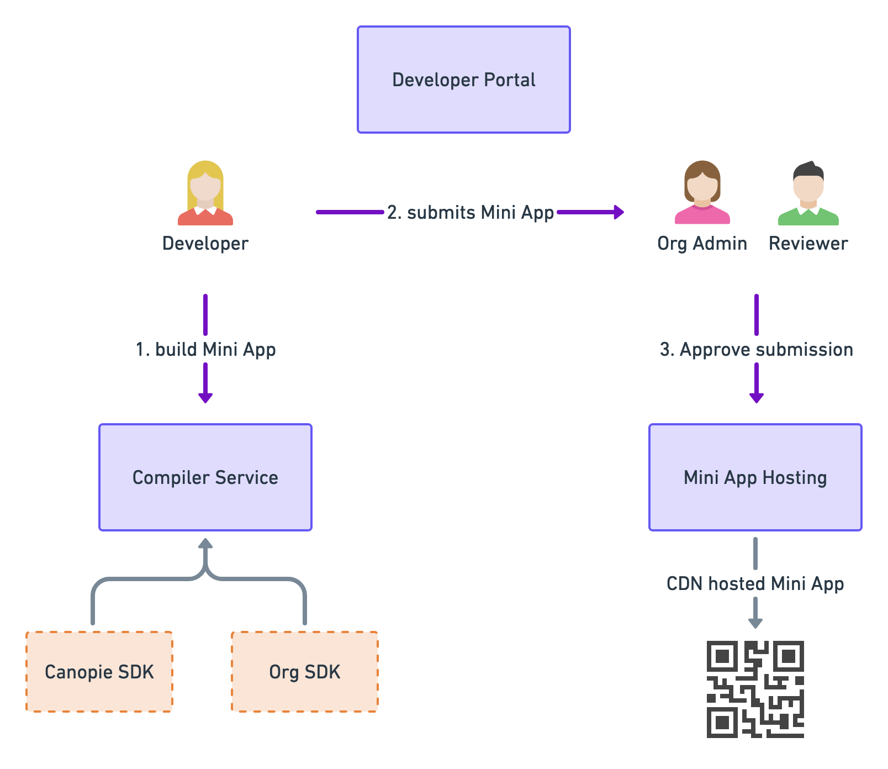

Enterprise Tier
The enterprise subscription allows your organization to deploy all components of Canopie on infrastructure you choose. This can be a combination of on prem, hybrid cloud, public cloud or one of the supported options below.
Rebranding Canopie for your organization purposes is available at this tier. This means complete control over branding, marketing, scalability, security etc. fully available to your organization.
Below is a description of some of the components available.
Note: These are features that come out of the box with the Canopie platform. The backend is entirely REST API driven. Enterprise customers please contact sales@canopie.io for API documentation.
Main Components

All modules are built as container services and can be used to scale out horizontally. By using containers, it can be deployed onto many cloud services and be agnostic to a lot of environments. Some examples of environments that the modules could work in will include:
- RedHat's OpenShift
- Google Cloud GKE, App Engine
- AWS' Elastic Beanstalk, EKS, Lambda
- Azure Kubernetes Service (AKS)
- Alibaba Container Service for Kubernetes
- Custom Kubernetes Clusters
- Many more
Developer Portal
The portal is the entrypoint for in house developers or third party developers to register and submit Mini Apps on. This is identical to Canopie's SaaS offering on the free and non enterprise tiers.
The portal is the first touch point for developers to register their interest in developing for your Super App. Developers register, create Mini Apps and submit them using the portal. Publishing also happens through this interface.
Since this is the public facing side of the Canopie stack, your organization can rebrand it to how they see fit or even charge developers a registration fee.
The Developer
Developers can be individuals or companies that wish to build a Mini App on your platform. They could be internal to your organization as a different business unit or they could be external third parties if you wish to open up the Super App ecosystem to external developers.
As a developer, the main tasks on the portal would be:
- Registering on the portal and paying any fee associated to be on the platform
- Creating Mini Apps
- Managing developers who should be part of the Mini App
- Submitting Mini Apps for review
- Resolving any issues with Mini App if rejected from the review
- Publishing the Mini App into production
The Reviewer
The reviewer is an employee of the organization. Their job is to look at Mini App submissions for the Super App. They need to test and review Mini Apps to ensure that it does not violate any of the terms of service or guidelines of the Super App. These guidelines need to be provided by the organization so that Developers adhere to them in the first place. This ensures that there is a consistent and good experience for end users.
The Organization Admin
The super user of the organization has complete control over the platform. The admin has all the powers of a Reviewer and can add new Reviewers to the organization.
In addition, the admin manages billing, security, and native specific features for the Super App.
Compiler
Canopie comes with its own extensible DSL for developers to create Mini Apps on. Specifically it comes with an HTML-like DSL called CPML and a near identical JavaScript like DSLhere.
The JavaScript comes bundled with a handy SDK for common functionality and hooking into the Mini App lifecycle. It also provides some native callbacks to the host platform e.g. the Dialer, Camera etc. on the device.
In addition, Canopie can bundle a custom SDK to give Mini Apps reusable functionality offered by the organization to give the Super App extended functionality. E.g. if the Super App had a payments service or special information around the user, it can be exposed through this custom SDK.
Here is a snippet of what a Canopie Mini Program might look like for showing a list of merchandise for a fruit store:
Tester App
To support the developers when they write Mini Apps, the tester app is a mobile application that can scan developer build versions that are not yet exposed to the public. This will help developers during the development lifecycle of the Mini App. This tester app also protects the Mini App from external access with encrypted QR codes and artifacts that is meant specifically for the developers' eyes only.
Additionally, this is particularly useful when bringing a custom SDK to extend the capabilities of the Super App and ensure that there are no clashes with variables, namespacing and other existing functionality.
Finally the tester app will assist the reviewer teams when they need to review a Mini App. They can launch it and double check that it follows the guidelines of the platform.
Mini App Hosting
The Mini App hosting module will serve the verified Mini Apps worldwide on the chosen CDN provider. The module enables the platform to utilize its own domain name so that it's possible to serve MPs on something like https://mp.yourdomain.com/mp-name/version.
Use of a CDN enables caching and fast serving to the end customers, no matter where they are in the world. All the benefits of a traditional CDN are true which will offload the resources necessary in the platform's data centre, assuming that the data centre isn't a CDN itself.
What Canopie Doesn't Do
Canopie services come in containers to have both flexibility in utilization and portability. They can be paired with other services in a Kubernetes based pod. Each organization, especially at the enterprise level, have different security, provisioning, networking, deployment processes and so forth.
In the future, Canopie may provide these as optional plugins or configurations.
Canopie will provide the means to mark Third Party Developers as verified but does not do the verification process itself. The organization will need to have a way to verify the identity of the registrants. Verifying developers is important to ensure accountability, billing, dispute resolution and protection of the platform's brand.
Consulting and Support
Enterprise customers enjoy the benefit of being first class citizens for support over other tiers. Custom SLAs can be tailored to your needs.
Feel free to reach out to sales@canopie.io for a free consultation on whether Canopie is right for the organization. Canopie has consultants available to discuss and tackle how to best integrate Canopie based on the unique structure of every business.